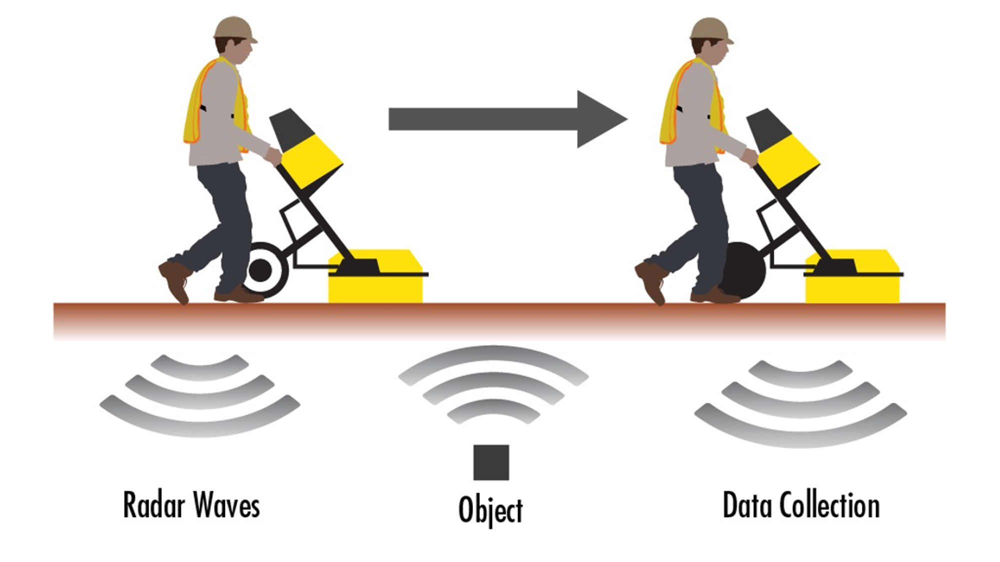
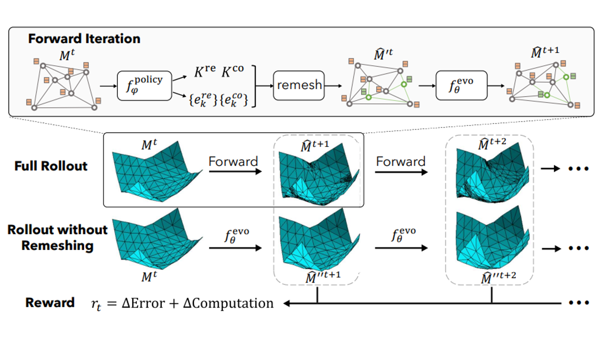
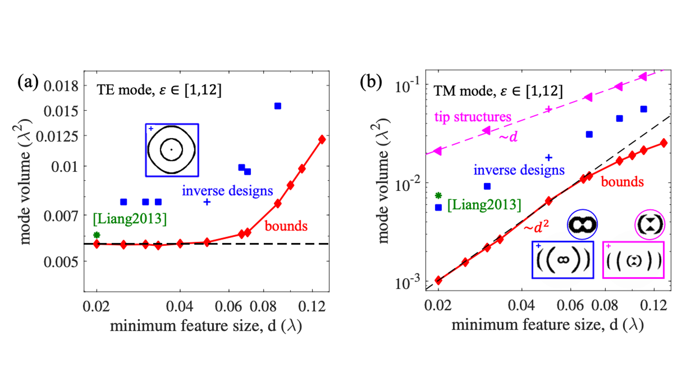
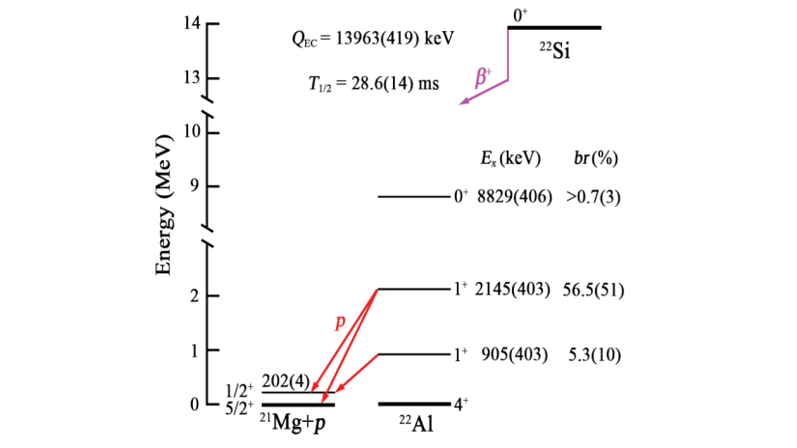

|
|
Learning to Solve PDE-constrained Inverse Problems
with Graph Networks
Qingqing Zhao*, David B. Lindell, Gordon Wetzstein
ICML 2022
webpage |
abstract |
bibtex |
github |
video
Learned graph neural networks (GNNs) have recently been established as fast and accurate alternatives for principled solvers in simulating the dynamics of physical systems. In many application domains across science and engineering, however, we are not only interested in a forward simulation but also in solving inverse problems with constraints defined by a partial differential equation (PDE). Here we explore GNNs to solve such PDE-constrained inverse problems. Given a sparse set of measurements, we are interested in recovering the initial condition or parameters of the PDE. We demonstrate that GNNs combined with autodecoder-style priors are well-suited for these tasks, achieving more accurate estimates of initial conditions or physical parameters than other learned approaches when applied to the wave equation or Navier-Stokes equations. We also demonstrate computational speedups of up to 90x using GNNs compared to principled solvers.
@inproceedings{qzhao2022graphpde,
title={Learning to Solve PDE-constrained
Inverse Problems
with Graph Networks},
author={Qingqing Zhao and David B. Lindell
and Gordon Wetzstein}
journal={ICML},
year={2022}
}
|
|

|
Deep Born Operator Learning for Reflection
Tomographic Imaging
Qingqing Zhao*, Yanting Ma, Petros T. Boufounos,
Saleh Nabi, Hassan Mansour
2023 under review
abstract |
bibtex |
@inproceedings{BornGPR,
title={Deep Born Operator Learning for Reflection Tomographic Imaging},
author={Qingqing Zhao*, Yanting Ma, Petros T. Boufounos,
Saleh Nabi, Hassan Mansour}
journal={under_review},
year={2022}
}
|
|

|
Learning Controllable Adaptive Simulation
for Multi-scale Physics
Tailin Wu*, Takashi Maruyama*, Qingqing Zhao*,
Gordon Wetzstein, Jure Leskovec
2023 under review
abstract |
bibtex |
Simulating the time evolution of physical systems is pivotal in many scientific and engineering problems. An open challenge in simulating such systems is their multi-scale dynamics: a small fraction of the system is extremely dynamic, and requires very fine-grained resolution, while a majority of the system is changing slowly and can be modeled by coarser spatial scales. Typical learning-based surrogate models use a uniform spatial scale, which needs to resolve to the finest required scale and can waste a huge compute to achieve required accuracy. In this work, we introduce Learning controllable Adaptive simulation for Multi-scale Physics (LAMP) as the first full deep learning-based surrogate model that jointly learns the evolution model and optimizes appropriate spatial resolutions that devote more compute to the highly dynamic regions. LAMP consists of a Graph Neural Network (GNN) for learning the forward evolution, and a GNN-based actor-critic for learning the policy of spatial refinement and coarsening. We introduce learning techniques that optimizes LAMP with weighted sum of error and computational cost as objective, which allows LAMP to adapt to varying relative importance of error vs. computation tradeoff at inference time. We test our method in a 1D benchmark of nonlinear PDEs and a challenging 2D mesh-based simulation. We demonstrate that our LAMP outperforms state-of-the-art deep learning surrogate models with up to 60.5\% error reduction, and is able to adaptively trade-off computation to improve long-term prediction error.
@inproceedings{Tailingraphpde,
title={Learning Controllable Adaptive Simulation
for Multi-scale Physics},
author={Tailin Wu, Takashi Maruyama,
Qingqing Zhao, Gordon Wetzstein,
Jure Leskovec}
journal={under_review},
year={2022}
}
|
|

|
Minimum Dielectric-Resonator Mode Volumes
Qingqing Zhao*, Lang Zhang, Owen D. Miller
pdf |
abstract |
bibtex |
We show that global lower bounds to the mode volume of a dielectric resonator can be computed via Lagrangian duality. State-of-the-art designs rely on sharp tips, but such structures appear to be highly sub-optimal at nanometer-scale feature sizes, and we demonstrate that computational inverse design offers orders-of-magnitude possible improvements. Our bound can be applied for geometries that are simultaneously resonant at multiple frequencies, for high-efficiency nonlinear-optics applications, and we identify the unavoidable penalties that must accompany such multiresonant structures.
@misc{qzhaomodev,
url = {https://arxiv.org/abs/2008.13241},
author = {Qingqing Zhao and Lang Zhang and Owen D. Miller},
title = {Minimum Dielectric-Resonator Mode Volumes},
publisher = {arXiv},
year = {2020},
}
|
|

|
Large Isospin Asymmetry in 22Si/22O Mirror
Gamow-Teller Transitions
Reveals the Halo Structure of 22Al
J. Lee*, et. al. (RIBLL Collaboration)
Physical Review Letters, 2020
pdf |
abstract |
β-delayed one-proton emissions of 22Si, the lightest nucleus with an isospin projection Tz ¼ −3, are studied with a silicon array surrounded by high-purity germanium detectors. Properties of β-decay branches and the reduced transition probabilities for the transitions to the low-lying states of 22Al are determined. Compared to the mirror β decay of 22O, the largest value of mirror asymmetry in low-lying states by far, with δ ¼ 209ð96Þ, is found in the transition to the first 1þ excited state. Shell-model calculation with isospin-nonconserving forces, including the T ¼ 1, J ¼ 2, 3 interaction related to the s1=2 orbit that introduces explicitly the isospin-symmetry breaking force and describes the loosely bound nature of the wave functions of the s1=2 orbit, can reproduce the observed data well and consistently explain the observation that a large δ value occurs for the first but not for the second 1þ excited state of 22Al. Our results, while supporting the proton-halo structure in 22Al, might provide another means to identify halo nuclei.
|
Website template from here
|
|
{kind=link}